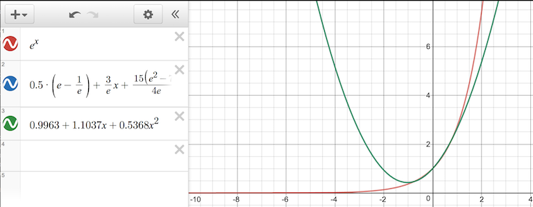
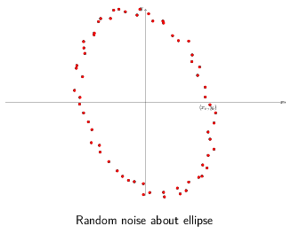
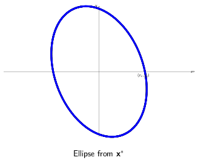
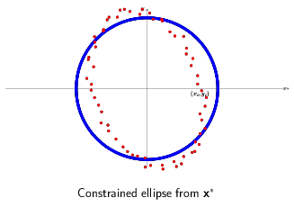

This is the second part of a two-part writeup about that venerable optimization technique, least squares. I sought mostly to cover stability issues and some interesting variants like Least Squares Polynomial generation and equality constrained Least Squares. I’d suggest reading through the included references for more detail, especially for the continuous least squares polynomial technique where a detailed derivation is kind of lengthy. Also presented is a solution for ellipse fitting using the quadratic form which I think is simpler than the parametric equation approach.
I’d appreciate any corrections or other feedback.
Calculating \((A^TA)^{-1}A^T\) is kind of overkill. In general there are better alternatives than calculating the inverse of a matrix to solve a system of equations. Gaussian elimation is simple alternative. Although it operates in \(O(n^3)\) steps it necessarily requires fewer operations than calculating the inverse and is numerically more stable.
Provided the columns of \(A\) are independent, then \(A^TA\) will have an inverse. However, even if the columns of \(A\) are independent, it’s possible for \(A\) to be ill-conditioned, in which case orthogonal decomposition techniques are a slower but more stable route. Dmitriy Leykekhman describes using \(QR\) decomposition to solve linear least squares. In the general case, \(A\) is an \(m\times{}n\) matrix with rank \(n\). Given \(A = QR\), in order to solve \(A\textbf{x} = \textbf{b}\), we determine \(\textbf{x} = P\textbf{y}\) such that:
\(R\textbf{y} = \textbf{c}\)
\(Q^T\textbf{b} = \begin{pmatrix}\textbf{c} \\ \textbf{d} \end{pmatrix}\)
and \(P\) is the permutation matrix such that
\(Q^T A P = \begin{pmatrix}R \\ 0 \end{pmatrix}\)
The polynomial fit problems I’ve described so far are discrete: they match at a particular set of points. There is more sophisticated use of least squares which operates continuously on a function over some domain. This technique generates the Least Squares Polynomial.
Biswa Nath Datta offers a detailed derivation for the Least Squares Polynomial problem. The goal in to minimize the residual continuously over the entire interval, in essence finding the closest overall polynomial approximation. The objective function minimized in this case is \(E = \int_a^b[f(x)-P_n]^2dx\). By calculating the derivative of \(E\) and setting to 0, the normal equations work out to be (using the powers of x as our basis):
\(a_0\int_a^b1dx + a_1\int_a^bxdx + \cdots + a_n\int_a^bx^ndx = \int_a^bf(x)dx\)
\(\cdots\)
\(a_0\int_a^bx^idx + a_1\int_a^bx^{i+1}dx + \cdots + a_n\int_a^bx^{i+n}dx = \int_a^bx^if(x)dx\)
for \(i=1,2,3,\cdots,n\)
Substituting \(s_i\) for the integrals on the left and \(b_i\) for those on the right gives us
\(\begin{pmatrix}s_0 & s_1 & \cdots & s_n \\ s_1 & s_2 & \cdots & s_{n+1} \\ \vdots & \vdots & \ddots & \vdots \\ s_n & s_{n+1} & \cdots & s_{2n}\end{pmatrix} \begin{pmatrix}a_0 \\ a_1 \\ \vdots \\ a_n\end{pmatrix} = \begin{pmatrix}b_0 \\ b_1 \\ \vdots \\ b_n\end{pmatrix}\)
…or \(S\textbf{a} = \textbf{b}\).
It is generally recommended to, instead of using the powers of x to generate \(S\), to instead use an orthogonal polynomial basis. This is because \(S\) above is often ill-conditioned when using the powers of x, leading to instability and the accumulation of numeric errors. As an alternative, an orthogonal polynomial basis, such as the Legendre polynomials, can produce a stable \(S\) and are reasonably convienient to work with not least because they can be derived iteratively.

For example, consider the case of fitting a quadratic polynomial to \(e^x\). Biswa Nath Datta computes a solution of using an orthogonal basis, \(p(x) = \frac{1}{2}(e-\frac{1}{e}) + \frac{3}{e}x + (\frac{15 (e^2-7)}{4 e})(x^2-\frac{1}{3})\) and the powers-of-x basis, \(p(x) = 0.9963 + 1.1037x + 0.5368x^2\) respectively. Measuring the error with \(\int_{-1}^{1}(e^x-p(x))^2\) gives the relative values of approximately \(0.001441\) and \(0.00193\) respectively. In general we expect the polynomials to be very close. In some circumstances minimizing the overall error is less important than minimizing the error at a particular set of points, in which case the discrete method may be preferable.
While Least Squares is designed to be robust against errors in y, it is not particularly good about errors in x (in statistics terms we say that the regressors - the elements of \(\textbf{x}\) - must be exogenous). The errors it fares best against are random and normally distributed - any consistent bias in measurement cannot be corrected.
When generating a least squares polynomial with an orthogonal polynomial basis, care must be taken though to use the interval over which the basis is orthogonal. Legendre polynomials, for example, are orthogonal over the domain \(-1 \leq x \leq 1\). Using least squares in this case requires either restricting the domain or using a change of variables to effect the same.
When doing function approximation (or modeling), we usually need to measure how good our approximation is. This is especially useful when we’re generating a polynomial approximation but aren’t sure what the right degree is: incrementally increasing the degree and stopping when the error inflects can be our best option. There are several standard methods of measuring error, and the Root Mean Square - RMS - is typical.
\(E_2 = \sqrt{{\sum_{i=1}}^{n} (y_i - f(x_i))^2}\)
In the case where we’re trying to build a simple model of an affine function \(y = mx + b\), the coerrelation coefficient tells us how closely the data ends up fitting the straight line. The correlation coefficient is labeled \(r\).
\[r = \sqrt{\frac{\sum_{i} [(b+mx_i)-\tilde{y}]^2}{\sum_{i}(y_i - \tilde{y})^2}}\]
…where \(\tilde{y}\) is the mean value of the dependent variable y, \(r\) ranges from +1 to –1, and the extreme values of \(r\) indicate a perfectly linear relationship (the sign indicating the slope).
In our examples heretofore we’ve been assuming that each measurement - each row in \(\textbf{y}\) - has equal accuracy. But sometimes we know that some measurements (and hence data points) are more reliable than others. To bias the final \(\textbf{x}^*\) to work harder to minimize the error for those measurements, we can add a weight to equations that calculate the residual.
Consider the sum of squares error \(E^2 = \sum_i^n (y_i-a_i x_i)^2\). Weighting the individual datapoints consists of multiplying each equation with an additional paramters, \(w_i\), such that \(w_i > w_j\) implies that we have more confidence in data point \(i\) than \(j\). Ultimately this gives us \(E^2 = \sum_i^n w_i (y_i-a_i x_i)^2\), or in matrix form this is equivalent to \((\textbf{y}-Ax)^T W (\textbf{y}-Ax)\) where
\(W = \begin{pmatrix} w_1 & 0 & \cdots \\ 0 & w_2 & \cdots \\ & \ddots & \\ \cdots & \cdots & w_3 \\ \end{pmatrix}\).
Performing least squares with a change of variables, \(\tilde{A} = AW\), \(\tilde{\textbf{y}} = W\textbf{y}\) gives us the weighted normal equations:
\((\tilde{A}^T\tilde{A})\textbf{x} =\tilde{A}^T\tilde{\textbf{b}}\).
\((A^TW^TWA)\textbf{x} =A^TW^TW\textbf{b}\).
Alternatively, equating the derivative of the residual to 0, \(\frac{dE^2}{d\textbf{x}}=0\), will produce the same equations.
All the examples we’ve been looking at so far have been unconstrained: there are no restrictions on the values that \(\textbf{x}\) can take. We can add equality constraints to our \(\min |A\textbf{x}=\textbf{y}|^2\) easily, that is, with an analytic solution. (From Optimization models and applications):
We express our equality constraints as the equation \(C\textbf{x} = \textbf{d}\). Assume that there is at least one feasible solution \(\textbf{x}_0\) for \(C\textbf{x}=d\). Any attempt to move \(\textbf{x}\) for the purpose of minimizing \(|A\textbf{x}=\textbf{y}|^2\) by some vector \(\textbf{s}\) must result in \(C(\textbf{x}_0 + \textbf{s}) = \textbf{d} \implies C\textbf{x}_0 + C\textbf{s} = \textbf{d}\) to be correct. Since we must match \(C\textbf{x}_0 = \textbf{d}\) exactly, \(C\textbf{s}\) must be 0. Any attempt to change \(\textbf{x}\) must occur along the nullspace of \(C\).
Let \(N\) be the nullspace of \(C\). We can rephrase the above by saying we’re looking to minimize \(|A\textbf{x}=\textbf{y}|^2\) where \(\textbf{x} = \textbf{x}_0 + N\textbf{z}\), \(\textbf{z}\) is an arbitrary vector. Therefore the problem changes to minimize \(|\tilde{A}\textbf{z}=\tilde{\textbf{y}}|^2\) where \(\tilde{A}=AN\) and \(\tilde{y}=y-A\textbf{x}_0\). At this point we can plug our equation into our familiar normal equations and derive \(\textbf{x}\).

Here’s an example adapted from Flavio Truzzi’s article on Least Squares. Take these set of data points which were generated by adding random noise about the ellipse \(\frac{1}{2}x^2 + \frac{1}{3}x^2 = 1\) rotated by 20 degrees.
As a reminder there are multiple representations of the same ellipse. Truzzi uses the parametric form of a rotated ellipse. About the origin, the parameteric form is:
\(x(t) = a\ cos(t) cos(\theta) - b\ sin(t) sin(\theta)\)
\(y(t) = a\ cos(t) sin(\theta) + b\ sin(t) cos(\theta)\)
in this specific case,
\(x(t) = 2\ cos(t) cos(20^°) - 3\ sin(t) sin(20^°)\)
\(y(t) = 2\ cos(t) sin(20^°) + 3\ sin(t) cos(20^°)\)
In standard form the coefficients are \(\frac{1}{a}\), \(\frac{1}{b}\) respectively.
Solving the general case provides values for \(a\ cos(\theta)\) and \(b\ sin(\theta)\), which is less than ideal. More problematic, it requires solving two least squares problems, one for x and y separately. In order to limit the solution with equality constraints we need to solve them together. Thankfully we can avoid these problems using the quadratic form of the same ellipse.
\(a'x^2 + b'xy + c'y^2 = 1\)
\(a'\), \(b'\), and \(c'\) are related to the \(a\), \(b\) and the angle of rotation in the parametric representation by a set of formulas described in Charles F. Van Loan in Using the ellipse to fit and enclose data points.
Given a set of \(x\), \(y\) data points, we can reconstruct \(a'\), \(b'\), and \(c'\) by the following \(A\) and \(\textbf{b}\) least squares setup:

\(\begin{pmatrix} x_1^2 & x_1y_1 & y_1^2 \\ x_2^2 & x_2y_2 & y_2^2 \\ \cdots \\ x_n^2 & x_ny_n & y_n^2 \\ \end{pmatrix} \begin{pmatrix}a' \\ b' \\ c'\end{pmatrix} = \begin{pmatrix}1 \\ 1 \\ \cdots \\ 1\end{pmatrix}\)
Converting back to parametric form gives us our original values for \(a\) and \(b\). We also get the angle of rotation factored individually. Pretty nice!
Now onto equality constraints. Let’s say we wanted to restrict out solutions to those where \(a = b\). In other words we’re looking for the circle that best fits this group of points.
In matrix form, this constraint is expressed as \(\begin{pmatrix}1 & 0 & -1 \\ 0 & 1 & 0\end{pmatrix} \textbf{x} = \textbf{0}\). The middle unknown multiplies \(xy\) and is responsible for the rotation, which we’ve set to unconditionally equal 0 with the second row. The first row states we want the coefficients for \(x^2\) and \(y^2\) to be equal. The nullspace of our constraint matrix, \(N\), is \(\begin{pmatrix}1 \\ 0 \\ 1\end{pmatrix}\).

By inspection, a feasible solution for \(x_0\) is \(\begin{pmatrix}1 \\ 0 \\ 1\end{pmatrix}\). Thus the optimal solution can be found via least squares with \(A N = \begin{pmatrix} x_1^2 + y_1^2 \\ \cdots \\ x_n^2 + y_n^2 \\ \end{pmatrix}\), \(\tilde{\textbf{b}} = \textbf{b} - A\textbf{x}_0 = \begin{pmatrix} b_1 - x_1^2 + y_1^2 \\ \cdots \\ b_n - x_n^2 + y_n^2\end{pmatrix}\).
Since the arrived at solution is not for \(\textbf{x}\) directly but \(\textbf{z}\), our final solution \(\textbf{x}\) will be \(\textbf{x}_0 + N\textbf{z}\).
Although that’s all I wanted to cover for least squares, there’s a ton more to cover and most of it of practical use. Least Squares is one of the more basic optimization techniques but also one of the most robust and fastest. I’d really recommend going through the referenced materials to get an idea both about further applications but also things like the calculus based derivations of the normal equations which I alluded to but didn’t present.
Least squares introduction, including code, with elliptical fit of data using parametric representation.
Comprehensive coverage of ellipse representations including conversion.
Succinct derivation of the technique for solving equality constrained least squares on slide 5.
Describes QR decomposition for solving linear leasts squares in great detail.
Excellent introduction to least squares approximation of functions.
A compendious resource in general, all information about the Correlation Coefficient came from this.
Good (if a bit dated) coverage of numerical and stability issues.
-- Joe Valenzuela (Senior Engine Programmer)